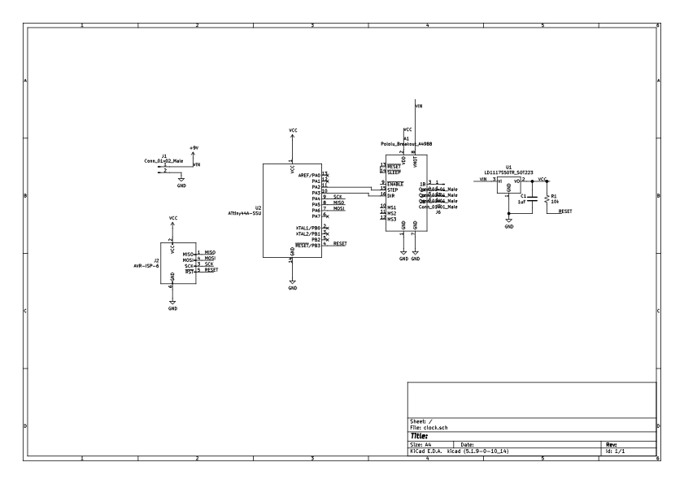
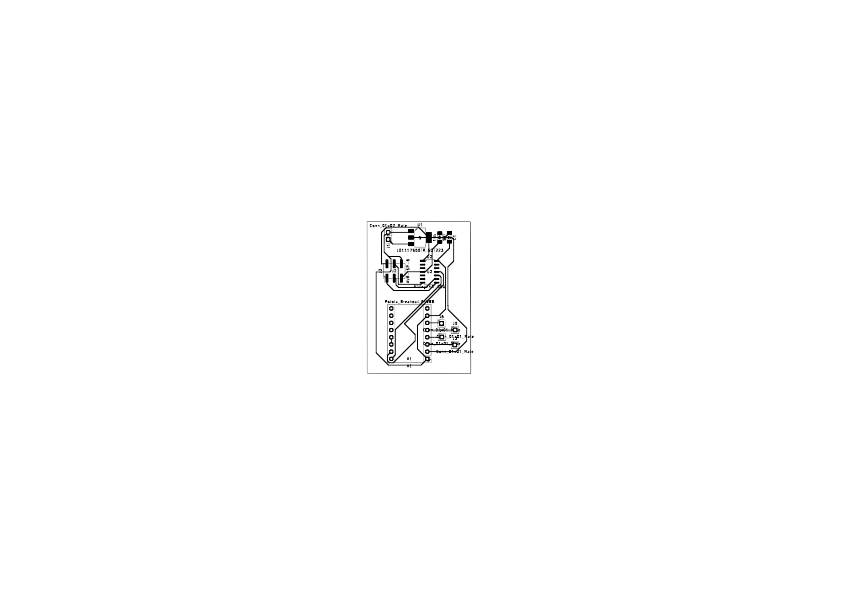

drive trains
making!
circuit design
Building on last week's PCB design, the goal for this week was to design a small machine that incorporates a drive train. First choice was what kind of drive train & motor to use. I've actually had an idea for a while to make a 'linear' clock which uses e.g. a ruler which already has numbers 1-12 to show the time, but I never knew how to actually do this. Turns out a rack and pinion is just what I wanted! And if I use a stepper, the click of the motor could be kind of like a mechanical 'tick'.

For the circuit, then, I used a NEMA 17 stepper and Pololu A4988 stepper driver that we have in lab. The schematic/footprint were already part of the Kicad library. I added header pins to bring out to the 4 wires of the stepper motor. The other pins supply 12V power, and two ATtiny outputs connect to the step & direction pins.
The potentiometer on the driver should be set for the motor being used to limit current; the motor has a 1.7A rating, so I want to set the current to 1A. I could measure current directly, but found out that there is a slightly easier way; there is a current sensing resistor on the driver, and current limit is equal to 8 times the measured voltage reference divided by (8 * current sense resistance), which is 0.68 ohms for this driver. So, I turn the pot until I measure 0.54V. (I also learned a fun trick about identifying the wires for stepper motor coils, which is that if you touch the two wires of the same coil together and try to manually turn the spindle, its harder to turn!)
And here's the pcb:

drive train
For my rack & pinion, I got matching 3D models from McMaster Carr and printed them. The stepper motor spindle is 5mm in diameter,
so I chose the model appropriately. I figured I'd start with this, and once I see if it works I could add evenly spaced numbers
to the rack for telling time.
milling & soldering
Milling felt more routine this time around. Like last time, though, it took me 3 times of soldering to get my circuit working.
The first time time there was a short from 5V power to ground after I finished soldering, and on the second I couldn't
identify the problem - though it may have just been that the 9V test battery I was using was dead :/. On the first two, I
soldered the stepper motor drive directly to the board:

My soldering job was a bit messy underneath the breakout board though. Even though the breakout board was included in Kicad already, the pads
were a bit small for me to solder onto. So on the third, I instead soldered headers to bring out to the driver:

I tried uploading some code to it, and it worked!
Here's the code that I used:
Unfortunately, while I was fiddling with the code and plugging/unplugging power from my circuit, I looked up to find smoke
coming from the 5V regulator. I'm not sure what happened - I had turned power on/off several times before this, and none
of my wires were touching :(.
Update!
Update to finish the rack and pinion fixturing! I used a Nema 17 stepper motor bracket from Thingiverse and
edited it with two holes to accommodate the rack at the correct height. My hope was to have these holes apply
force downward on the rack to keep it in place. (I sliced the bracket for the Prusa
and ended up printing it on an Ender so the bracket print quality is not good, please ignore the stringing :)

I attached the motor to the bracket with M3x8 screws. There are also holes on the bracket to mount it
to sometheing sturdy- but for now, I just clamped it to a table, since I have no permanent use case for it.
It was good to reckon with friction/forces/++ to think about how drive trains come to life!
reflections
Breaking my board was an unceromonious way to end this assignment. Unfortunately I - like my regulator - felt
a bit too burnt out to try to salvage the parts. I did get to see the machine kind-of work, though,
even though I didn't finish fixturing the rack & pinon. One of my biggest takewaways from this project was to mill several boards at once-
it only takes a few more minutes, and saves a lot of headache later.
My soldering job was a bit messy underneath the breakout board though. Even though the breakout board was included in Kicad already, the pads were a bit small for me to solder onto. So on the third, I instead soldered headers to bring out to the driver:
I tried uploading some code to it, and it worked!
Here's the code that I used: Unfortunately, while I was fiddling with the code and plugging/unplugging power from my circuit, I looked up to find smoke coming from the 5V regulator. I'm not sure what happened - I had turned power on/off several times before this, and none of my wires were touching :(.
Update!
Update to finish the rack and pinion fixturing! I used a Nema 17 stepper motor bracket from Thingiverse and edited it with two holes to accommodate the rack at the correct height. My hope was to have these holes apply force downward on the rack to keep it in place. (I sliced the bracket for the Prusa and ended up printing it on an Ender so the bracket print quality is not good, please ignore the stringing :)I attached the motor to the bracket with M3x8 screws. There are also holes on the bracket to mount it to sometheing sturdy- but for now, I just clamped it to a table, since I have no permanent use case for it.
It was good to reckon with friction/forces/++ to think about how drive trains come to life!